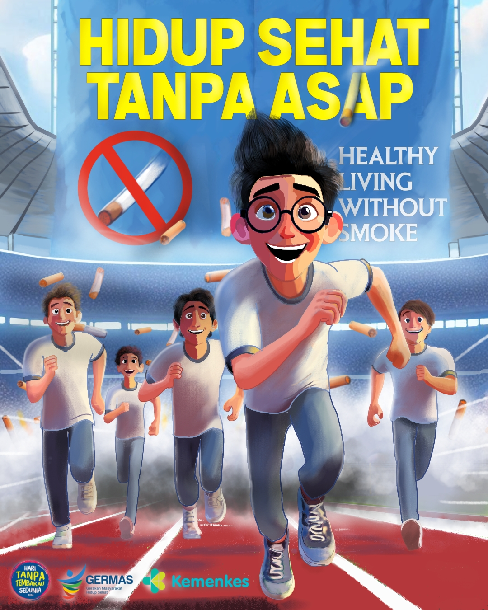

Loading...

Poster ini berjudul "Hidup Sehat Tanpa Asap", dirancang sebagai karya desain grafis bertema kampanye kesehatan dalam rangka Hari Tanpa Tembakau Sedunia. Poster ini mengangkat visual sekelompok anak muda yang berlari penuh semangat sambil meninggalkan asap rokok di belakangnya, melambangkan ajakan untuk menjauhi kebiasaan merokok dan beralih ke gaya hidup yang lebih sehat dan aktif.
Karya ini berhasil meraih Juara 2 Bidang Lomba Desain Poster pada Festival Lomba Seni Siswa Nasional (FLS2N) tingkat Kota Cilegon yang diselenggarakan pada 7 Mei 2024, didukung oleh Kemenkes RI dan program GERMAS (Gerakan Masyarakat Hidup Sehat).
Proyek ini melatih kemampuan menyampaikan pesan sosial yang kompleks melalui visual yang sederhana namun berkesan. Selain mengasah keterampilan desain grafis, pengalaman ini juga mengajarkan pentingnya riset pesan kampanye agar sebuah karya visual benar-benar relevan dan berdampak bagi audiensnya — sebuah keterampilan komunikasi visual yang juga berguna dalam presentasi teknis dan dokumentasi proyek keteknikan.
Kembali ke Portfolio